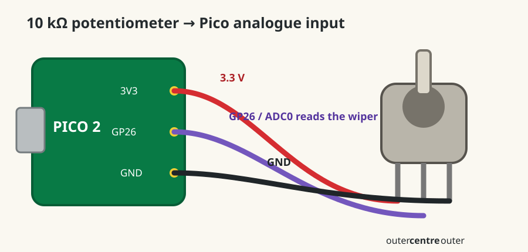

Dub Siren V3 · lesson 0004
Turn position into a number
Wire one owned B10K potentiometer and watch the Pico measure its position from 0.0 to 1.0.
Today’s winA physical knob becomes a software value—the basis of the siren’s Pitch control.
1. Know the three pins
- Outside pin3.3 V end
- Centre pinWiper: moving output
- Outside pinGround end
Your B10K is a 10 kΩ linear potentiometer. “Linear” means equal turns produce roughly equal changes in the measured value.
2. Wire it with USB unplugged
- Connect one outside pot pin to Pico
3V3(OUT). - Connect the centre pin to
GP26 / ADC0. - Connect the other outside pin to
GND. - Trace aloud: “3V3, wiper to GP26, ground.”

Protect the PicoUse
3V3(OUT), not VBUS or VSYS. Unplug USB before moving wires.3. Print the position
Reconnect USB. Run this main.py and open Thonny’s Shell:
from picozero import Pot
from time import sleep
pot = Pot(26)
while True:
position = min(int(pot.value * 5), 4)
print(position)
sleep(0.1)pot.value starts as a continuous number from 0.0 to 1.0. Multiplying by five creates five ranges. int() removes the decimal part. min(..., 4) keeps the exact upper endpoint at four instead of five.
Why your modulo version wrapped
% 5.0 means “remainder after division by five.” It does not remove decimals. At the top, 5.0 % 5.0 becomes 0.0.
4. Find all five positions
Measure
Turn slowly from one end to the other. Confirm the Shell shows 0, 1, 2, 3, then 4.
- If turning direction feels backwards: unplug USB and exchange only the two outside wires.
- If value never changes: centre/wiper wire is likely wrong.
- If adjacent numbers flicker near a boundary: this is normal analogue noise. A later lesson can stabilize it.
Done means
- The Shell reaches every integer from 0 through 4.
- You can identify both outside pins and the centre wiper.
- You know GP26 is both GPIO 26 and ADC0.
Tell your teaching agent: whether you can reach all five numbers and whether any boundary flickers.